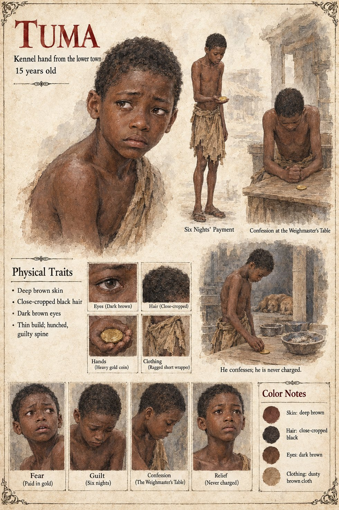

Tuma
Kennel hand from the lower town · paid in gold to salt the dog's fish · 15 years old
A boy of fifteen from the lower town, the youngest hand in the palace kennel, whose mother's roof leaks and who has not been paid in two years. The queen's steward Kassa puts into his palm a coin heavier than anything he has ever held and tells him that a friend of the palace would be glad if the dog's evening fish were seasoned, for six nights, with a little of something that would help it rest; the twist of folded leaf is handed to him at the kitchen gate by Kassa's servant. Tuma understands that he is being asked to do something wrong, and, more sharply, that it is very small, and that it would pay for a roof. He salts the fish. The dog, who does not know it is being bribed, licks the hand that feeds it, eats, and sleeps very soundly, and is, in the morning, a little slow.
Kolo sees a boy's whole guilty spine across the yard and says nothing to him. After the failed Second Asking Tuma flees to the Weighmaster's Table that same night with the last of the coin in his fist, drinks two horns of Grey-Never faster than is wise, and tells the whole room, in the thick, high, tearful voice of a boy who has discovered that he is in something too large for him, that the queen had made him salt the Long Debt's fish. Hawa puts a third horn in his hand and tells him to start again from the beginning. She only wanted it calm, he says. By dawn the story has reached the palace, the market, the road-stations and the gold-weighers' yard, and has acquired improvements: the herb has become poison, the dog has all but died, the queen has stood over the fish herself with a spoon. In the Epilogue Tuma was never charged with anything, and mends the roof, which leaks again within the decade.
The manuscript gives fifteen, the lower town, the leaking roof and the guilty spine; the rest is invented. The sheet's thin build of about 5 ft 3 in (160 cm), round frightened face, close-cropped black hair, dark brown eyes, deep brown skin, ragged short wrapper and heavy gold coin are its own, as are its panels Fear, Guilt, Confession and Relief and its scenes Six Nights' Payment, Confession at the Weighmaster's Table and He confesses; he is never charged.
“She only wanted it calm”